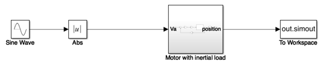
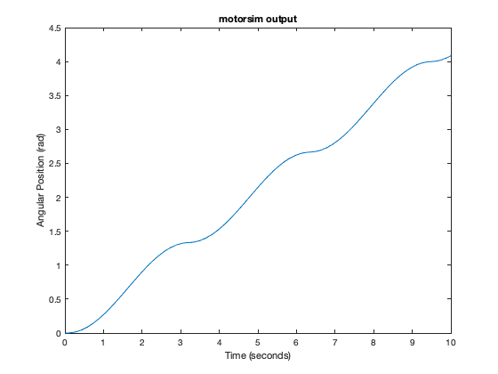
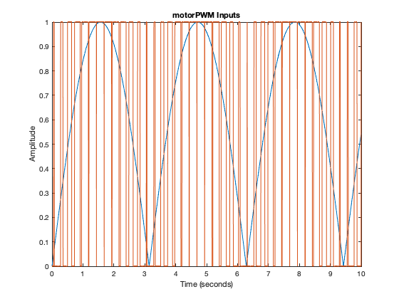
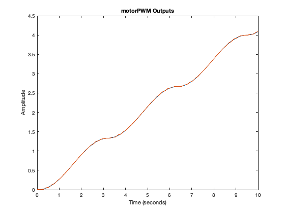
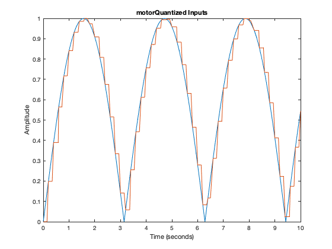
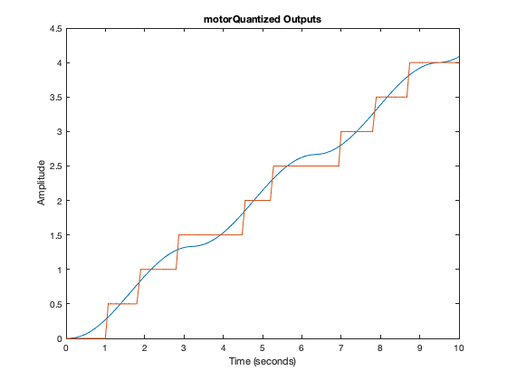
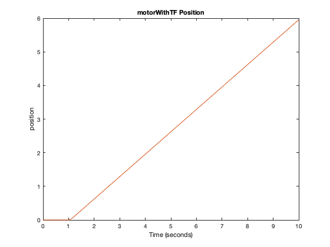
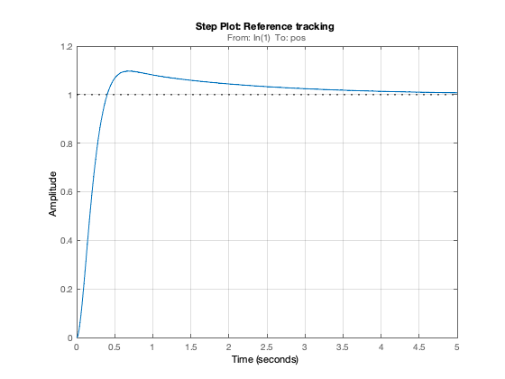
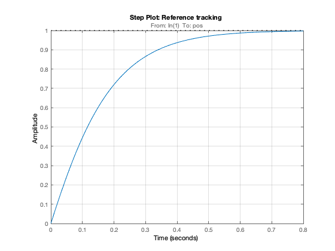
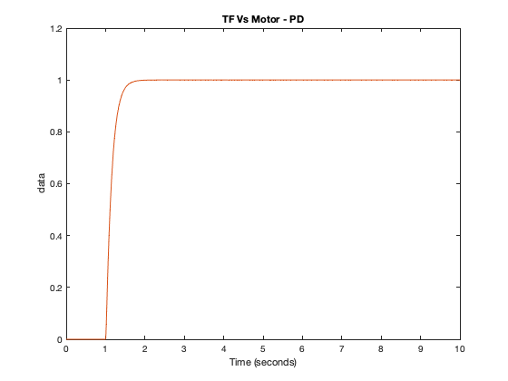

Assignment 2
Assignment2_Curtis.mlx Alex Curtis EENG350 2/9/22 This live script contains every exercise in assignment 2. I recomend running the whole script first to initialize the workspace. Once that's done, each part can be run separately.
If you'd like to open the Simulink models instead of loading them in the background, change open_system to open_system.
Contents
Motor Parameters
The constants used in creating the motor model
Ra = 1; % armature resistance [Ohms] Kt = 0.5; % motor torque constant [Nm/A] Ke = 0.5; % back emf constant [Vs/rad] J = 0.05; % Load inertia [Nm^2] b = 0.5; % damping [Nm/s]
This simulation applies a rectifed sinusoidal voltage to a DC motor model, with the output as the angular position in radians.
Open the block diagram so it appears in the documentation when published. Make sure the block diagram is closed before running the publish function Plot of Motor Output Baseline motor response
Requires motorsim.slx
open_system('motorsim') % Load the model out1 = sim('motorsim'); figure % Create output figure plot(out1.simout) title('motorsim output') ylabel('Angular Position (rad)') 
The motor rotates in the positive direction, with some oscillations due to the varying input Plot of Motor Response with PWM Input Shows the effect of a continuous PWM input
Requires motorPWM.slx
open_system('motorPWM') % Load the model PWMout = sim('motorPWM'); figure % Create input figure plot(PWMout.inputs) title('motorPWM Inputs') ylabel('Amplitude') figure % Create output figure plot(PWMout.outputs) title('motorPWM Outputs') ylabel('Amplitude') % Plot of Motor Response with Quantized Input % Shows the effect of a quantized input % % _Requires motorQuantized.slx_ open_system('motorQuantized') % Load the model Qout = sim('motorQuantized'); figure % Create input figure plot(Qout.inputs) title('motorQuantized Inputs') ylabel('Amplitude') figure % Create output figure plot(Qout.outputs) title('motorQuantized Outputs') ylabel('Amplitude')   
A quantized input is an approximation of the continuous input, and although it requires fewer points, it isn't very useful. Finding the Transfer Function of the Motor Using slLinearizer and getIOTransfer, MATLAB will find the closed loop transfer function of the motor for me!
Requires motor.slx
motor is the "Motor" subsystem
open_system('motor'); % Load the model sllin = slLinearizer('motor'); % Create new a slLinearizer model addPoint(sllin,{'Va','pos','vel'}); % Label the reference input and block output posTF = getIOTransfer(sllin,'Va','pos'); % Use getIOTransfer to find TF of Pos/Va velTF = getIOTransfer(sllin,'Va','vel'); % Use getIOTransfer to find TF of Vel/Va
Turn the generated position transfer function into a coefficient array for use in Simulink.
posTF = tf(posTF) % Convert to a TF object posNum = posTF.Numerator; % Find the numerator coefficients posNum = posNum{1}; % Convert the numerator to a the right form posDen = posTF.Denominator; % Find the denominator coefficients posDen = posDen{1}; % Convert the denominator to a the right form
posTF =
From input "Va" to output "pos":
10
----------
s^2 + 15 s
Continuous-time transfer function.
Turn the generated velocity transfer function into a coefficient array for use in Simulink.
velTF = tf(velTF) % Convert to a TF object velNum = velTF.Numerator; % Find the numerator coefficients velNum = velNum{1}; % Convert the numerator to a the right form velDen = velTF.Denominator; % Find the denominator coefficients velDen = velDen{1}; % Convert the denominator to a the right form % Plots of Motor Vs. Transfer Function - Position and Velocity % _Requires motorWithTF.slx_ % % Compares the generated transfer function with the baseline motor response. % % (Red is the transfer function response, blue is the motor response) open_system('motorWithTF') % Load the model motorAndTFout = sim('motorWithTF'); figure % Create the position figure plot(motorAndTFout.position) title('motorWithTF Position') figure % Create the velocity figure plot(motorAndTFout.velocity) title('motorWithTF Velocity') % Creating and Tuning a PI controller for Motor % Why open pidTuner in a new window when I can do it inline % Convert Response Time to Bandwidth % Bandwidth is equivalent to 2 divided by the Response Time wc = 2/0.411919; % Convert Transient Behavior to Phase Margin % Phase Margin is equivalent to the Transient Behavior multiplied by 100 PM = 100*0.659116; % Define options for pidtune command opts = pidtuneOptions('PhaseMargin',PM); % PID tuning algorithm for linear plant model [CI,pidInfo] = pidtune(posTF,'PI',wc,opts); % Clear Temporary Variables clear wc PM opts % Get desired loop response Response = getPIDLoopResponse(CI,posTF,'closed-loop'); % Plot the result stepplot(Response) title('Step Plot: Reference tracking') grid on % Display system response characteristics disp(stepinfo(Response)) % Clear Temporary Variables clear Response Kp = CI.Kp % Displays the proportial coeficcient Ki = CI.Ki % Displays the integral coeficcient % Plot of PI Controled Motor Vs. Transfer Function - Position % The two lines occupy the exact same space on the plot which indicates the % generated transfer function is correct. open_system('TFLoopPI') % Load the PI controlled TF model open_system('motorLoopPI') % Load the PI controlled motor model tfOut = sim('TFLoopPI'); motorOut = sim('motorLoopPI'); figure % Create the position figure plot(tfOut.position) hold on plot(motorOut.position) hold off title('TF Vs Motor - PI') ylabel('Amplitude (rad)') % Tuning a PD Controller for Motor % Convert Response Time to Bandwidth % Bandwidth is equivalent to 2 divided by the Response Time wc2 = 2/0.317841; % Convert Transient Behavior to Phase Margin % Phase Margin is equivalent to the Transient Behavior multiplied by 100 PM2 = 100*0.855655; % Define options for pidtune command opts2 = pidtuneOptions('PhaseMargin',PM2); % PID tuning algorithm for linear plant model [CD,pidInfo2] = pidtune(posTF,'PD',wc2,opts2); % Clear Temporary Variables clear wc2 PM2 opts2 % Get desired loop response Response2 = getPIDLoopResponse(CD,posTF,'closed-loop'); % Plot the result stepplot(Response2) title('Step Plot: Reference tracking') grid on % Display system response characteristics disp(stepinfo(Response2)) % Clear Temporary Variables clear Response2 Kp = CD.Kp % Displays the proportial coeficcient Kd = CD.Kd % Displays the derivative coeficcient % Plot of PD Controlled Motor Vs. Transfer Function - Position open_system('TFLoopPD') open_system('motorLoopPD') tfOut = sim('TFLoopPD'); motorOut = sim('motorLoopPD'); figure plot(tfOut.position) hold on plot(motorOut.position) hold off title('TF Vs Motor - PD')
velTF =
From input "Va" to output "vel":
10
------
s + 15
Continuous-time transfer function.
RiseTime: 0.2675
TransientTime: 3.3361
SettlingTime: 3.3361
SettlingMin: 0.9096
SettlingMax: 1.0967
Overshoot: 9.6683
Undershoot: 0
Peak: 1.0967
PeakTime: 0.6839
Kp =
7.6109
Ki =
3.9833
RiseTime: 0.3200
TransientTime: 0.5478
SettlingTime: 0.5478
SettlingMin: 0.9021
SettlingMax: 0.9993
Overshoot: 0
Undershoot: 0
Peak: 0.9993
PeakTime: 0.9652
Kp =
9.7166
Kd =
0.5114
   